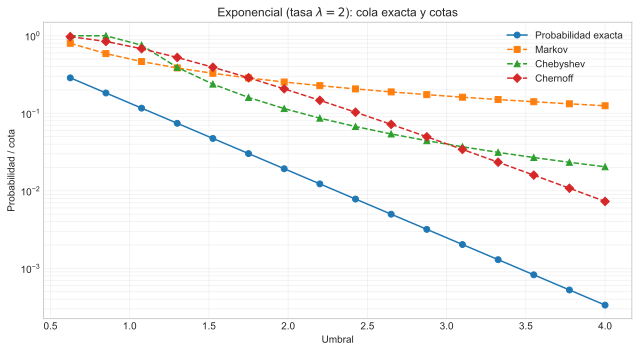

Markov
P(X ≥ a) ≤ E[X] / a
General y económica.
Desigualdades de Markov, Chebyshev y Chernoff
Usa las flechas del teclado para avanzar
Queremos controlar P(X ≥ a) sin reconstruir toda la distribución.
Las desigualdades cambian información por precisión: media, varianza o función generadora de momentos.
P(X ≥ a) ≤ E[X] / a
General y económica.
P(|X − μ| ≥ t) ≤ σ² / t²
Controla desviaciones.
P(X ≥ a) ≤ inf e−θaMX(θ)
Captura el decaimiento de la cola.
ColaP(X ≥ a). Una cota sirve si da menos que 1.
Momentosμ = E[X] y σ² = E[(X − μ)²].
GeneradoraM(θ) = E[eθX], donde sea finita.
Poisson(λ)P(X = k) = e−λλk/k!, con media y varianza λ.
ExponencialTasa λ: densidad λe−λy, media 1/λ y cola e−λa.
a > 0; sirve si a > μ
Con X = ±10: media 0, pero P(X ≥ 5) = 1/2.
sirve si a > μ + σ
Cota: σ² / (a − μ)².
sirve si a > μ
M(θ) < ∞ para algún θ > 0; no pide X ≥ 0.
1 Si X ≥ 0, entonces X ≥ a · 1{X≥a}.
2 Tomamos esperanza: E[X] ≥ a P(X ≥ a).
3 Dividimos entre a > 0.
Aplicamos Markov a la variable no negativa Y = (X − μ)².
Para la cola superior usamos t = a − μ, con a > μ.
1 Transformamos: X ↦ eθX, con θ > 0.
2 Markov: P(X ≥ a) ≤ e−θaMX(θ).
3 Elegimos el mejor valor admisible de θ.
M(θ) = exp{λ(eθ−1)}
Para un entero k > λ:
e−λ(eλ/k)k
M(θ) = λ/(λ−θ), θ < λ
Para a > 1/λ:
λa · e1−λa
Σk eθk·e−λλk/k! = exp{λ(eθ−1)}
Es la serie de ex: existe para todo θ.
λ ∫0∞ e−(λ−θ)y dy = λ/(λ−θ)
Si θ ≥ λ, la integral diverge: solo θ < λ.
La cola exponencial baja como e−λy: con θ ≥ λ ya no alcanza a compensar a eθy.
1 Minimizamos ψ(θ) = log M(θ) − θa; como ψ″ > 0, es un mínimo.
2 Poisson: λeθ = a ⇒ θ* = log(a/λ), si a > λ.
3 Exponencial: 1/(λ − θ) = a ⇒ θ* = λ − 1/a, si a > 1/λ.
Acierta la velocidad de la cola; solo pierde un factor lineal.


| k | Exacta | Markov | Chebyshev | Chernoff |
|---|---|---|---|---|
| 6 | 0.384 | 0.833 | ≥ 1 | 0.910 |
| 7 | 0.238 | 0.714 | ≥ 1 | 0.701 |
| 8 | 0.133 | 0.625 | 0.556 | 0.468 |
| 10 | 0.0318 | 0.500 | 0.200 | 0.145 |
| 20 | 3.45 × 10−7 | 0.250 | 0.0222 | 2.97 × 10−6 |
En coral, la mejor cota. En k = 20, Chernoff se pasa 8.6 veces; Chebyshev, 6.4 × 104.
| u = a / E[Y] | Exacta | Markov | Chebyshev | Chernoff |
|---|---|---|---|---|
| 1.25 | 0.287 | 0.800 | ≥ 1 | 0.974 |
| 2.15 | 0.116 | 0.465 | 0.756 | 0.681 |
| 3.05 | 0.0474 | 0.328 | 0.238 | 0.393 |
| 6.20 | 2.03 × 10−3 | 0.161 | 0.0370 | 0.0342 |
| 8.00 | 3.35 × 10−4 | 0.125 | 0.0204 | 7.30 × 10−3 |
Markov gana si u < 2.62, Chebyshev hasta 6.02 y Chernoff después: 4, 7 y 5 de los 16 umbrales.
PoissonSu cola baja más rápido que cualquier exponencial: gana Chernoff.
ExponencialChernoff carga el factor e·u: gana pasando 6 veces la media.
Variar λLa exponencial no cambia; en la Poisson, Chernoff mejora con λ.
LímiteSin función generadora (lognormal, Pareto) no hay Chernoff.
MarkovMáxima generalidad; menor precisión.
ChebyshevLa varianza mejora el control, pero la cota es bilateral.
ChernoffLa MGF captura mejor el régimen de eventos extremos.
No buscamos siempre la probabilidad exacta.
Buscamos una garantía útil.